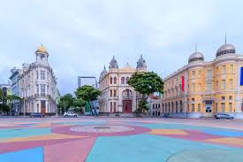

Patrimônio Histórico de Recife
Mais que um ponto de referência, o Marco Zero é um Portal para a rica história e a vibrante cultura da capital pernambucana
Centro Histórico do Recife: Patrimônio da UNESCO, com ruas de paralelepípedos, casas coloniais e igrejas barrocas

Rua do Bom Jesus: Berço da devoção pernambucana, com a Capela Dourada e o Museu do Homem do Nordeste.